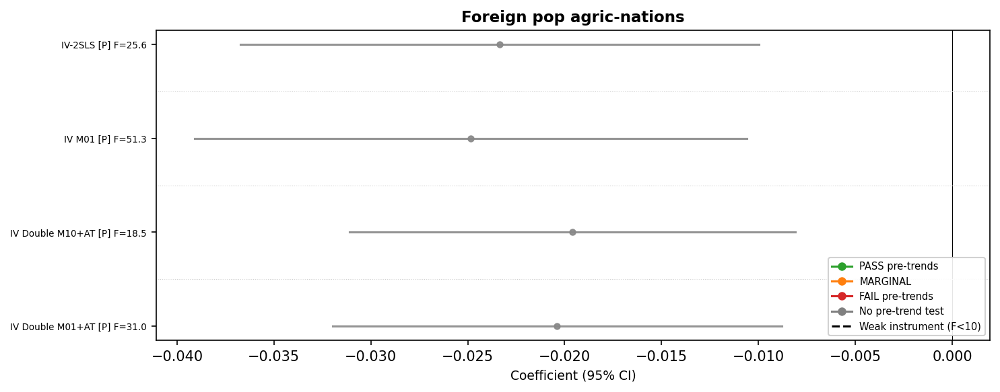
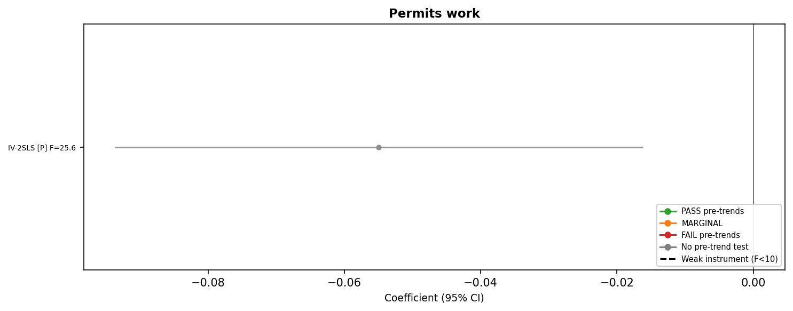
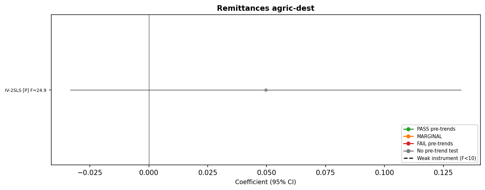

Province-Level Results
Triple DiD: agric_std × migr_std × year | Province×Sector FE + Region×Sector×Year FE
Reading the plots:
- ● Green = PASS pre-trends (F-test p > 0.10)
- ● Orange = MARGINAL (0.05 < p < 0.10)
- ● Red = FAIL pre-trends (p < 0.05)
- ● Gray = No pre-trend test
- Solid line = Strong instrument (F ≥ 10) or OLS
- Dashed line = Weak instrument (F < 10)
- [P] = Pooled post, [D] = Detrended (linear post-trend)
- F=X.X shows first-stage F-statistic
Active firms (Movi)

Employment (agric vs control)

Firm birth rate

Firm death rate

Firm net rate

Foreign pop (agric vs non-agric nations)

Foreign pop agric-nations

GVA (const 2015)

GVA per worker

INAIL fatal injuries

INAIL foreign injuries

INAIL foreign share

INAIL injuries

Permits (work vs family/study)

Permits work

Registered firms (Movi)

Remittances (agric vs non-agric dest)

Remittances agric-dest
